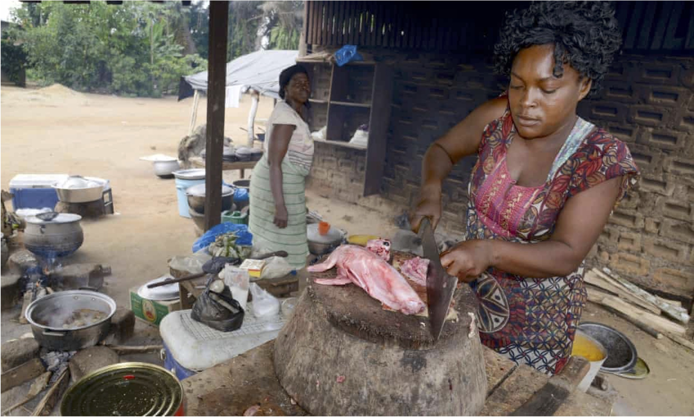
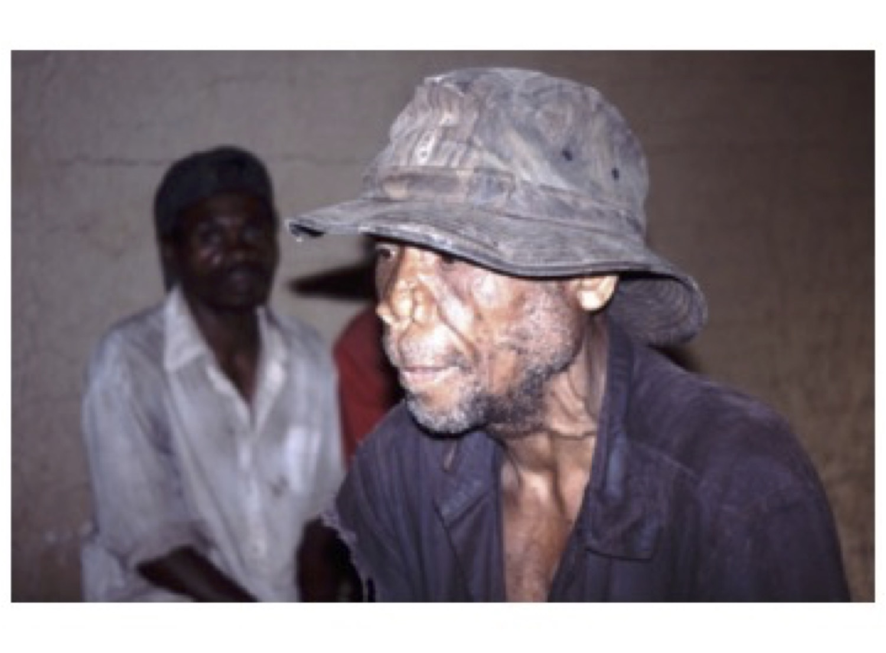
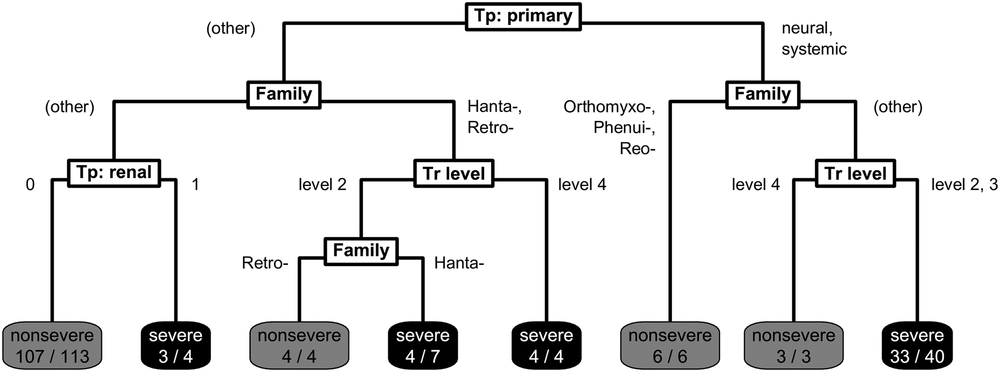

Washington State University
February 26, 2025
Food and Agriculture Organization (2019)
Intensifying zoonotic pathogen pressure in the Pleistocene selected for increased pharmacological plant use
Domı́nguez-Rodrigo et al. (2021)
Kim et al. (2020)
Palakurty and Diamond (2025)
Dufloo et al. (2025)
Han, Kramer, and Drake (2016)
Ebola, HIV, and monkeypox, SARS-CoV-1, and possibly SARS-CoV-2 (Kurpiers et al., 2016; Peros et al., 2021).
Systematic review: 133 reports of disease involving 60 pathogens in 58 bushmeat species, mostly mammals (95%), with some reptiles (4%) and birds (1%).
The most common zoonotic pathogens were helminths (37%) and bacteria (33%), followed by viruses and protozoa (15% each) (Peros et al., 2021).


Brierley, Pedersen, and Woolhouse (2019)
Leaves: correct classifications.
Brierley, Pedersen, and Woolhouse (2019)
Guth et al. (2019)